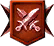

Une guilde peut se lancer en combat si elle a 15 défenses déployées ou plus.
Un joueur ne peut ni déployer de défense ni participer au combat le jour de son arrivée dans une guilde.
Les combats de guildes ont lieu les mercredi et dimanche. Le planning de ces journées se résume ainsi :
- De minuit à 11h : déploiement des défenses
- De 11h à 12h : matchmaking
- De 12h à 23h30 : combats
- De 23h30 à minuit : calcul des résultats
- Passé minuit : Distribution des récompenses, déblocage du terrain de purification de guilde
Chaque membres peut attaquer 3 fois. Les attaquants gagnent des médaille selon les résultats de leurs attaques :
Défaite : 1 médaille
Victoire : 3 médailles (bronze), 6 médailles (argent), 9 médailles (or).
Les défenses sont réparties en trois zones avec chacune un effet spécial actif :
- Salle du trône (or) : Dégâts de zone réduits de 40%.
- Chapelle (argent) : Augmente ou réduit les dégâts en fonction de l'élément
- Tour (bronze) : Potentiels spéciaux désactivés, PV, attaque et défense +150% (x2.5) pour les serviteurs 4nats.
Les combats de guildes ne sont pas considérés comme un mode JcJ ! Tous les effets restreints au JcJ (potentiels, bonus d'équipe, mais aussi certains effets passifs comme le poison de Blanche-Neige, le poison puissant d'Ozymandias, les balles perdues de Zeus...) ne seront donc pas actifs en guerres de guildes !
Les combats pouvant durer 9 minutes (après quoi le combat sera compté comme une défaite pour l'attaquant), il sera possible d'attaquer jusqu'à 23h20 au plus tard.
Comme il est nécessaire de participer (attaquer) pour débloquer le terrain de purification de guilde (voir section dédiée), et que même les défaites rapportent des médailles, il faut toujours attaquer, même si la victoire n'est pas une option. Le nombres de points de guerre de guilde  gagnés, dépensables dans la boutique dédié, se fait selon les performances individuelles (classement au sein de la guilde) et collectives (victoire ou défaite de la guilde, classement de la guilde).